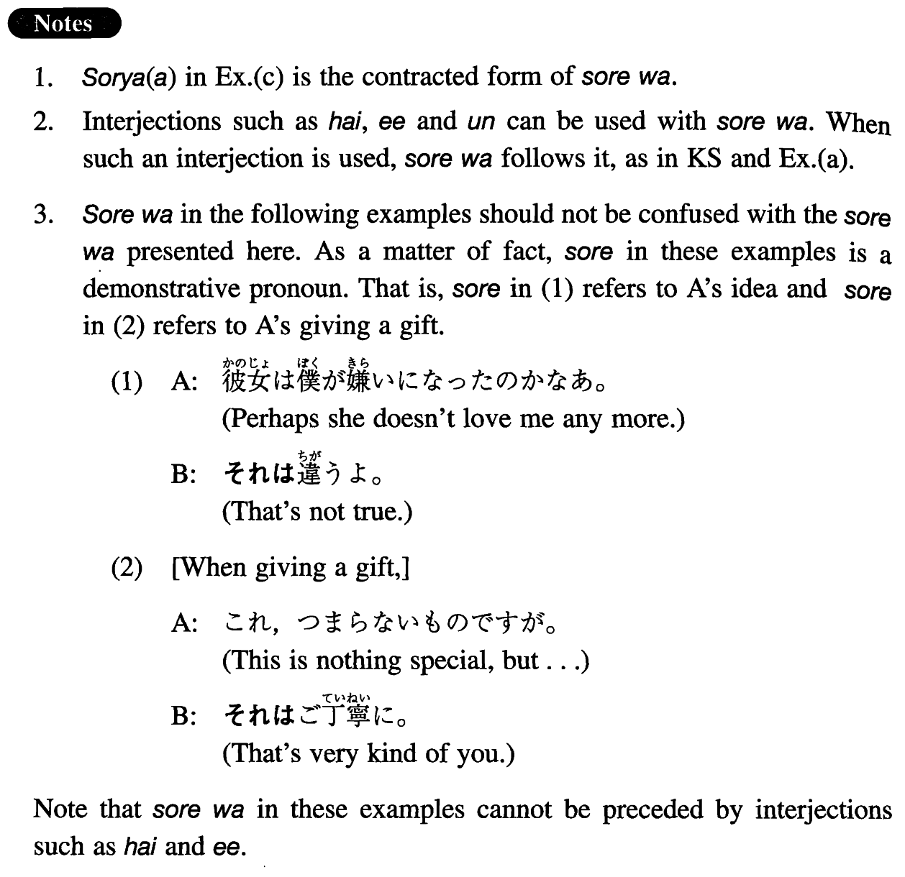

それは (I. 434)
- (ks).
- Ａ：勝ちたいでしょうね。Ｂ：（ええ）それは勝ちたいですよ。
- A: I bet you want to win (the game). B: (Yes,) of course, I do.
- (a).
- A: 国へ帰りたいと思うことがありますか。B: （ええ、）それはありますよ。
- A: Are there times when you want to go back to your country? B: (Yes,) Of course.
- (b).
- A: この値段だったらみんな買うでしょうか。B: それは買いますよ。そんな値段では絶対買えませんから。
- A: I wonder if they would buy (them) for this price. B: They surely would. They could never buy them (anywhere else) for that price.
- (c).
- A: もっと給料が高い方がいいでしょう？B:そりゃ（あ）そうですが…。
- A: You would prefer a higher salary, right? B: Naturally, I would, but. . .
